Il Nostro Staff Tecnico
Il nostro staff è composto da professionisti formati secondo un’unica scuola di pensiero: un framework tecnico-tattico rigoroso che unisce valori sportivi e principi di gioco avanzati. Portiamo sulla sabbia un sistema di allenamento collaudato per elevare il tuo gioco in modo costante e consapevole.
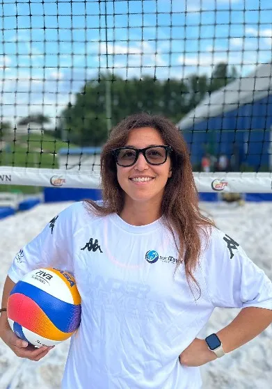
Angelica "Mulan" Ferrau
La nostra pres <3
Conosciuta da tutti come “Mulan“: ama questo sport e tutto ciò che rappresenta, giocatrice dal 2012, nasce insieme a Simone Franchi come organizzatrice di tornei ed eventi amatoriali al Beach Town già dal 2015. Nel 2013 dà luce all’Asd I Follow Beach Volley, della quale è Presidente e che dal 2020 ha ottenuto ottimi risultati nel campionato italiano per società: oltre 200 tesserati e per 4 anni consecutivi il titolo di vice-campioni italiani. Maestro allenatore di beach volley qualificato FIPAV dal 2022. Responsabile ed icona della scuola di beach volley del Beach Town dal 2021, nella quale ricopre il ruolo di responsabile e coordinatrice.
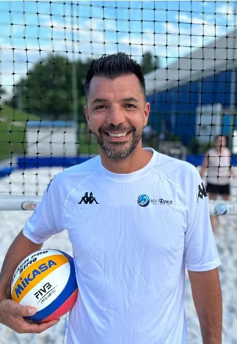
Simone Franchi
Vice Presidente e Direttore Tecnico
Ex-giocatore di pallavolo, massima serie raggiunta: Serie B2 nazionale, con esperienza di allenatore nel settore giovanile per 5 anni. Qualificato Maestro Allenatore di beach volley FIPAV dal 2021 e con i piedi nella sabbia come giocatore da più di 10 anni. Supervisore Unico di tornei federali Fipav, Vicepresidente della A.s.d. I Follow Beach Volley, che si fonde nella gestione della scuola di beach volley con Beach Town. Ama il beach volley e il mondo che gli appartiene. e al suo passato da analista video per la nazionale, porta un approccio matematico e chirurgico al posizionamento a muro e in difesa.
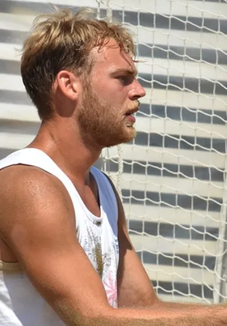
Edgardo Ceccoli
Allenatore
Eddy ha un passato da direttore tecnico ed istruttore di beach volley presso diverse società. La palla non ha segreti per lui. Ha giocato a pallavolo in serie A2 e nel beach volley è tra i migliori giocatori italiani con ottimi piazzamenti nelle tappe del campionato italiano assoluto. Allenatore competente e coinvolgente, insegna con entusiasmo e professionalità al Beach Town dal 2024.
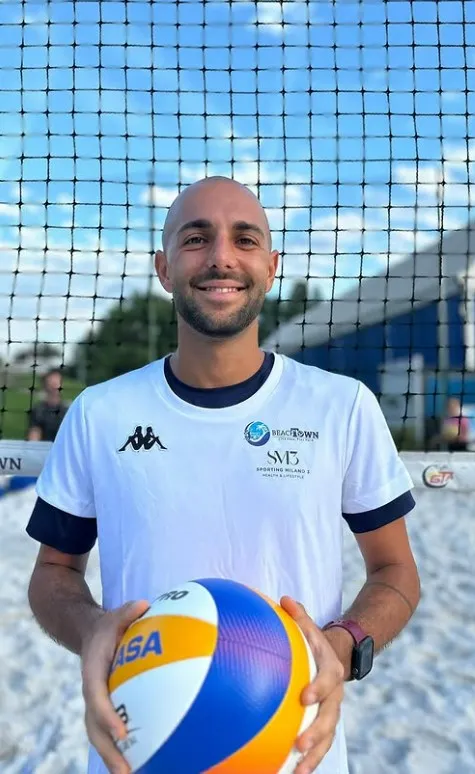
Davide Lucca
Allenatore
Conosciuto meglio come “Noccone”, giocatore agonista e Maestro Fipav. Ha competenze per allenare dal livello base fino all’agonista. Con la sua empatia ha legato e creato amicizie con tantissimi allievi, che restano anche al di fuori del campo da gioco. La sua forza è la positività, sempre solare, trasmette ai suoi atleti la passione per questo sport sotto ogni aspetto; eccellente analizzatore post allenamento dei progressi e del miglior percorso possibile per i suoi atleti e corsisti.
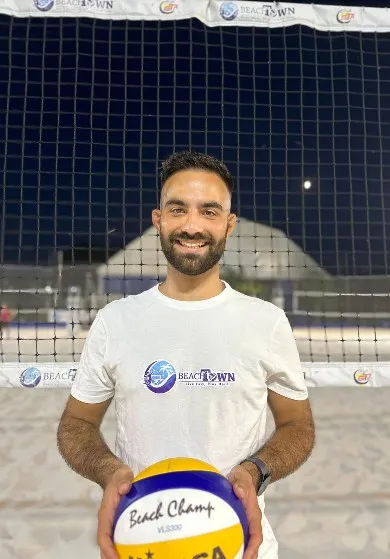
Davide Zangrandi
Allenatore
Un appassionato giocatore dal 2016 ed allenatore di beach volley qualificato Maestro allenatore FIPAV dal 2023, con una profonda dedizione per l’insegnamento e il coaching. Oggi si dedica totalmente al ruolo di allenatore nella scuola di Beach Town. Porta con sé una conoscenza approfondita del gioco da entrambe le prospettive, arricchisce le sue skills facendo call con allenatori americani del circuito AVP. La sua forza è la disponibilità e la serietà che mette in tutto quello che fa, un allenatore con allenamenti ad alto ritmo di cardio e lavoro sotto stress, ma resi piacevoli grazie al suo modo empatico di relazionarsi.
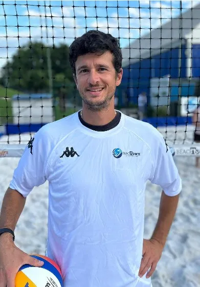
Nicolò Passi
Allenatore
Allenatore di beach volley con una decina di anni circa di esperienza da giocatore, ha fatto parte dello staff Nazionale di pallavolo per il Club Italia, oltre ad aver collaborato con squadre di serie A femminili e maschili in qualità di fisioterapista: il movimento è il suo lavoro. Ama tutti gli sport, la sabbia l’ha conquistato dal primo momento. Meticoloso e paziente nell’insegnamento dei fondamentali e forte propensione al coinvolgimento alle attività extra disciplinari, quali tornei o camp organizzati.
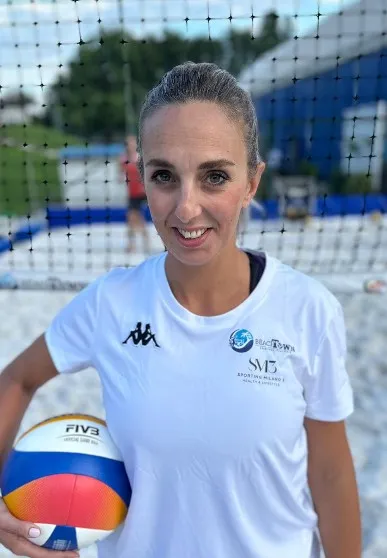
Stefania Verrigni
Allenatrice
Ex giocatrice di pallavolo, si approccia al beach volley nel 2019. Inizia ad allenarsi e a competere prima in tornei amatoriali, poi in tappe federali fino a diventare la campionessa Master 35 in carica. Visto le doti tattiche innate, ha conseguito il cartellino da Maestro Fipav nel 2023 e da qui comincia un percorso anche da allenatrice. Positività e ironia a livello esponenziale, fanno sì che le sue lezioni siano apprezzate e divertenti anche sulle parti più tecniche. Ha una forte propensione al coinvolgimento in tornei e partite, mettendosi spesso in gioco con i suoi corsisti ed atleti.
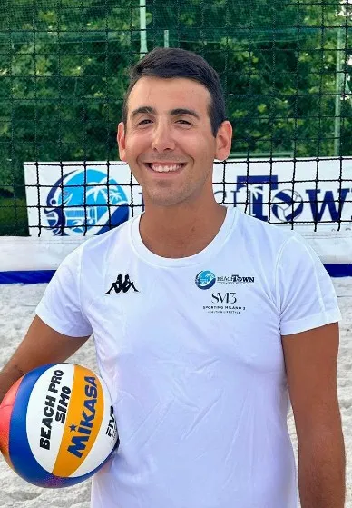
Riccardo Sgro
Allenatore
Giovane giocatore, allenatore abilitato dal 2023. Dopo anni di pallavolo decide di buttarsi nella sabbia del beach volley, che diventerà la sua più grande passione. Ricerca sempre la precisione tecnica mischiata ad una buona dose di preparazione fisica, e trasmette tutto con entusiasmo ai suoi allievi di Beach Town.
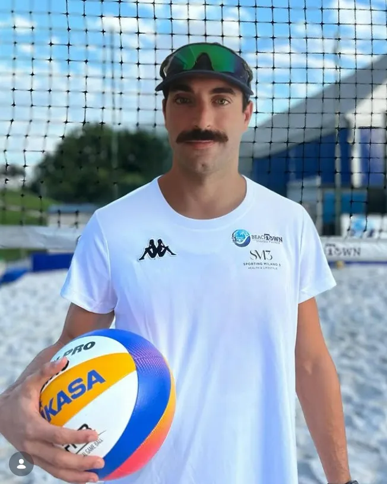
Antonino Cappadonna
Allenatore
Antonino Cappadonna, per tutti Kappa, entra ufficialmente nello staff tecnico di I Follow Beach Volley portando con sé un bagaglio di competenze d'eccellenza e un'energia travolgente. Laureato in Scienze Motorie e istruttore di beach volley con quattro anni di esperienza sul campo, Antonino riveste il ruolo di preparatore atletico specializzato nella performance sulla sabbia. La sua metodologia di allenamento punta al costante superamento dei limiti individuali, coniugando rigore tecnico e una passione contagiosa per trasformare ogni sessione in una sfida orientata alla crescita. Siamo pronti ad affrontare la nuova stagione insieme a un professionista che non molla mai, certi che il suo contributo sarà fondamentale per elevare il livello di gioco e di carica atletica di tutta la nostra squadra.
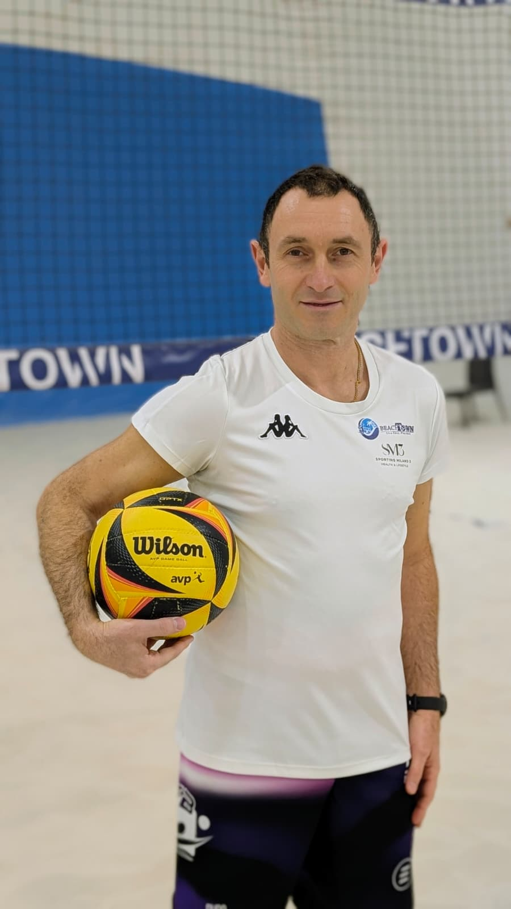
Yari Mannino
Allenatore
Dal primo giorno in sabbia ha capito che la sua vita sarebbe cambiata: ha iniziato la sua sfida come giocatore nel 2023 e, spinto da una passione viscerale, ha cominciato a organizzare tornei per i corsisti; ma la sua fame di beach volley non finisce: si qualifica Maestro FIPAV per conoscere di più su questo sport che tanto lo appassiona, e da lì a poco inizia anche a insegnare e a trasmettere il suo amato beach volley. Oggi vive il campo a 360 gradi. Mette a disposizione di chi ama questo sport tutto se stesso, con l'occhio di chi conosce le fatiche del principiante, mettendosi sullo stesso piano. Vi aspetta in campo!
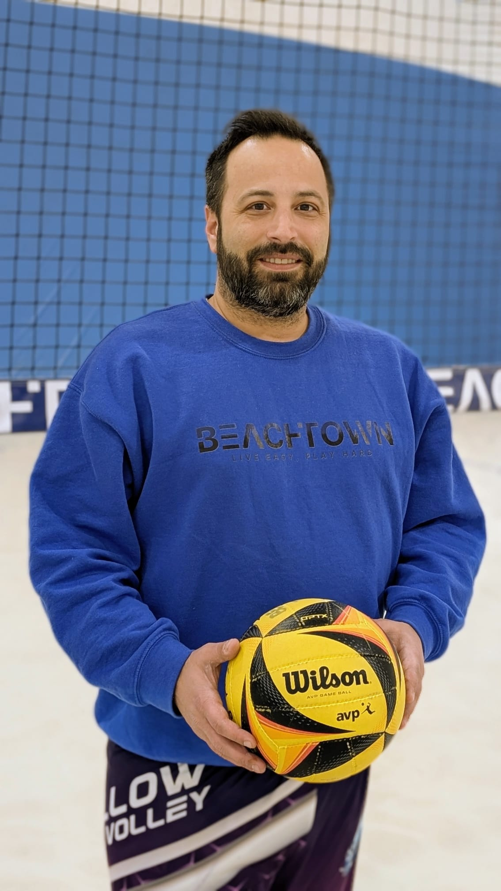
Alessandro Pesce
Allenatore
Giocatore e allenatore di beach volley da diversi anni, ha costruito il suo percorso tra tornei federali e campi sulla sabbia, affinando lettura di gioco e comunicazione in campo. Arbitro federale FIPAV, porta in allenamento la stessa precisione regolamentare che applica in gara, con sessioni strutturate su tecnica, tattica e gestione del match. Calmo sotto pressione e attento ai dettagli, accompagna i corsisti con obiettivi chiari e un approccio pratico: dal fondamentale alla fase di transizione, sempre con uno sguardo alla crescita costante di chi si allena con lui.